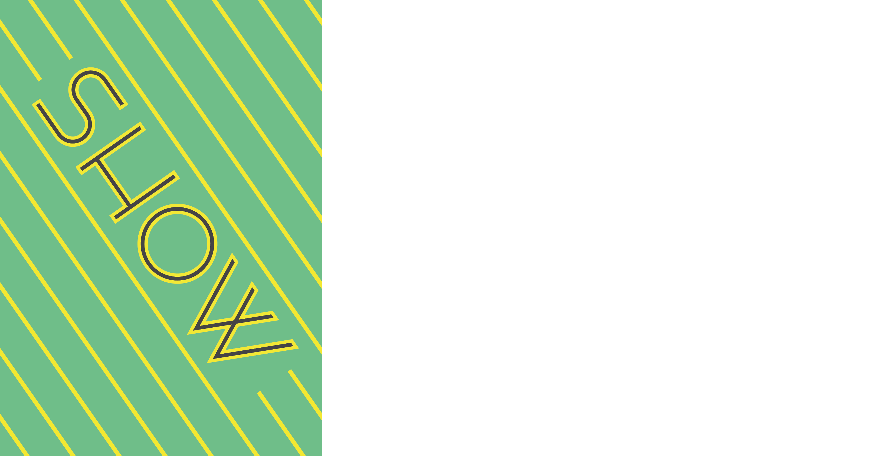
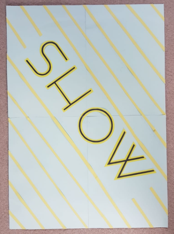

Leerdoel: "Het verkrijgen van inzicht in, en een scherp oog voor, het toepassen van letters in visuele communicatie".
De eerste opdracht die we kregen was de volgende opdracht: 'Plaats 25 relevante beelden van stadstypografie op Pinterest.' Ik heb de stadstypografie van Hilversum bekeken en hier foto's van gemaakt, die je hier onder kan zien. Om alle foto's beter te bekijken kan je klikken op het linkje hier onder.
https://nl.pinterest.com/dmkcorvers/type-the-city-2/#robin-ansemsDe tweede opdracht die we kregen was de volgende opdracht: '1 poster op A2 formaat, handmatig uitgevoerd in een techniek naar keuze, op (gekleurd) papier'. Ik heb een poster gemaakt met het lettertype van Hotel en Theater Gooiland in Hilversum. Wat de poster moet voorstellen? Dat leg ik je even uit! De groene kleur is Gooiland-groen, die veel in het hotel en op de website wordt gebruikt. De gele strepen moeten spotlights voorstellen die je in een theater kan vinden. De gehele rand om de letters heen moeten letters voorstellen die een gloed achter zich hebben als het donker is (doormiddel van lampjes).
Posterontwerp:
Gemaakte poster op A2:
De derder opdracht die we kregen was de volgende opdracht: 'Geef een compleet beeld van het lettertype: beschrijf historie, karakter, vormgeving, details, toepassing en geef een font-overzicht'. Ik mijn publicatie in de huisstijl van Hotel en Theater Gooiland gemaakt zoals hier onder is te zien:
Ik vond Typografie erg interessant. Ik fiets elke dag langs Hotel en Theater Gooiland en heb eigenlijk nooit stil gestaan bij het lettertype ervan en alle huisstijlen er omheen. Het was leuk om de Hilversume stadstypografie te ondekken. Ik wil Diederik Corvers bedanken voor de leuke en interessante lessen!
6,0